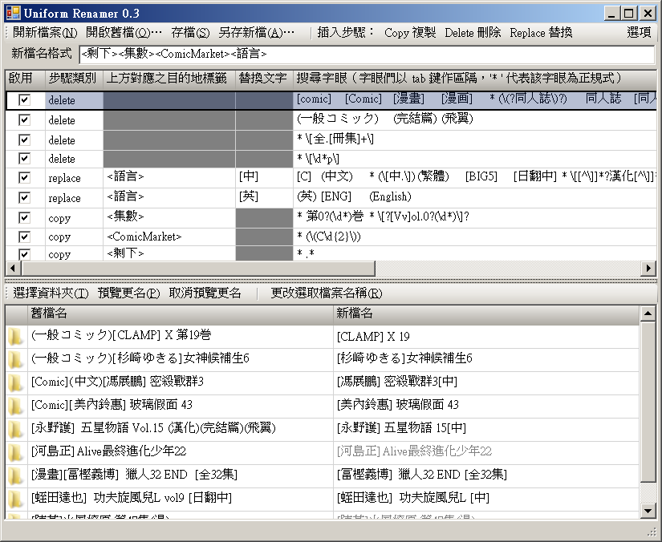

檔名整理器 Organize Renamer（暫）
看著資料夾裡下載的檔案漸漸增加，但是其命名的方式又參差不齊，你是否有種衝動想要找天好好把它們分門歸類，但是又覺得寸金難買吋光陰。又或者你辛苦的整理了，最後卻有著浪費時
間的空虛感？請試試看這款 Organize Renamer ，本軟體希望能幫助大家省下一半的整理時間。

使用教學
本軟體的使用方式大致上如下：
- 編寫命名規則，或者下載別人的命名規則來用。
- 選擇要批次大量重新命名的資料夾。
- 按按鈕預覽新的命名。
- 選擇要修改的檔案後，按「更名」批次一起命名。
編寫命名規則
命名規則是純文字檔案（*.txt），除了第一行是命名格式外，其餘的行數都是規則。首先我們來看個範例：
(一般コミック) (BIG5) [田中太郎] 世界末日 第01巻 --> [田中太郎] 世界末日 1 [C]
要如何把原本左邊的檔名改成右邊的檔名呢？套用下面的規則表即可
規則表的第一行是檔名格式。在這個例子中，我想要的檔名是「作者名
作品名 集數 中文」
有了命名格式後，就要分別指定各個規則。規則是由 tab
字元分欄位的。
第二行是「刪除」規則，使用關鍵字「delete」作為開頭，凡是在
delete 後面列的各個字，都會從原始檔名中被刪除。刪除的好處是，只要把不要用的刪除了，就能得到剩下需要的資料。
第三行是「替代」規則，由使用者自行命名（在這裡這個規則的名字是
chinese）。規則名稱會被對應到檔名格式中。
範例中的這項規則能夠偵測有沒有「(BIG5)」這個字樣，如果有的話，代表這檔案是中文的。於是「[C]」就會被放在檔名格式中「<chinese>」的位置。
第四行是「正規式」規則，使用正規式（regular
expression）來搜尋文字。這種規則的名字一律必須有「reg_」在前方。正規式十分強大，能夠搜尋各種文字組合。
範例中，我想要搜尋漫畫的集數，但是不想要原本檔名中一些累贅的字（第、0、巻）。在這個例子中，我只想要 0 後面的數字，所以就用 (\d*)
把該數字抓出來，放在檔名格式中「<reg_vol>」
的位置。
最後一行也是個正規式規則，把所有剩下來的東西放進檔名格式中「<reg_remain>」的位置。在正規式中，
「(.*)」即是代表選取全部的字元（即是剩下來的字元）。
相信透過這三種規則的組合，以及正規式的威力，就能夠做出你想要的各種檔名，節省手動更名的時間。
結尾
目前我想不出好的程式名稱，所以在此徵求程式命名。
此外，也希望大家能提供意見，改善這個說明檔（我覺得自己寫得很爛），甚至是規則的寫法等等。